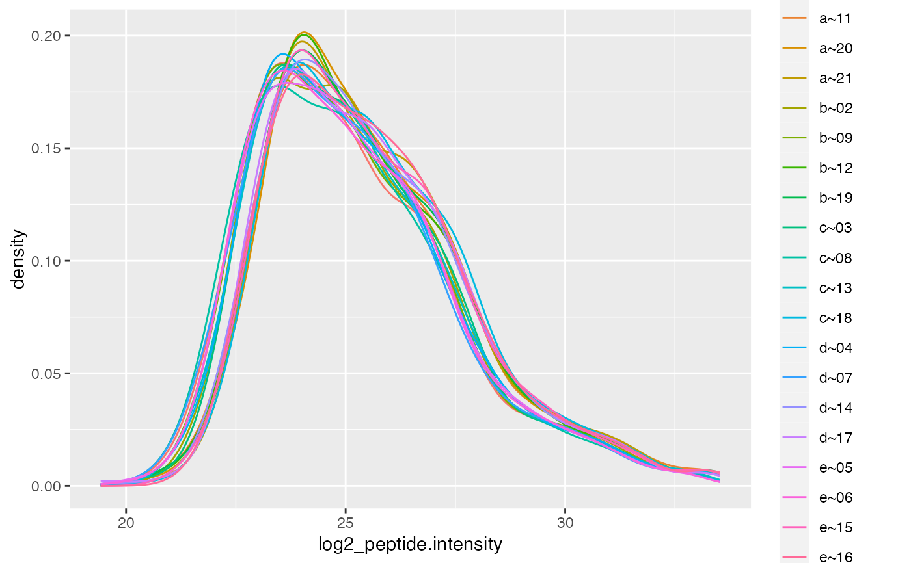
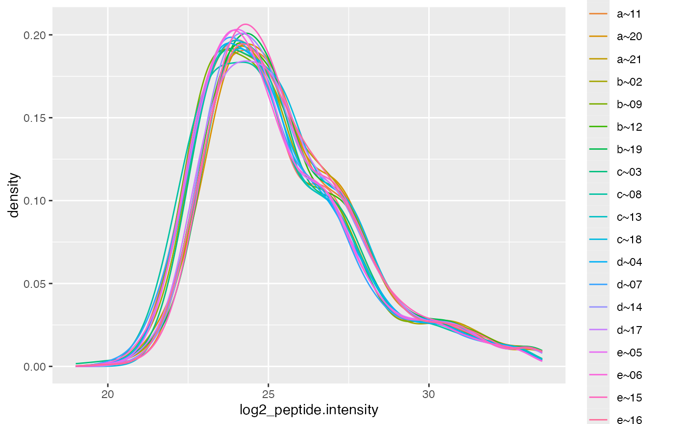

R/LFQDataTransformer.R
LFQDataTransformer.RdDecorate LFQData with Methods for transforming Intensities
Decorate LFQData with Methods for transforming Intensities
lfqLFQData object
log2()log2 transform data
robscale()robust scale data
robscale_subset()log2 transform and robust scale data based on subset
LFQDataTransformer$robscale_subset(
lfqsubset,
preserveMean = TRUE,
colname = "transformedIntensity"
)intensity_array()Transforms intensities
intensity_matrix()pass a function which works with matrices, e.g., vsn::justvsn
istar <- prolfqua_data('data_ionstar')$filtered()
#> Column added : nr_peptide_Id_IN_protein_Id
istar$config <- old2new(istar$config)
data <- istar$data |> dplyr::filter(protein_Id %in% sample(protein_Id, 100))
lfqdata <- LFQData$new(data, istar$config)
lfqcopy <- lfqdata$get_copy()
lfqTrans <- lfqcopy$get_Transformer()
x <- lfqTrans$intensity_array(log2)
#> Column added : log2_peptide.intensity
x$lfq$config$table$is_response_transformed
#> [1] TRUE
x <- x$intensity_matrix(robust_scale)
#> Warning: data already transformed. If you still want to log2 tranform, set force = TRUE
plotter <- x$lfq$get_Plotter()
plotter$intensity_distribution_density()

# transform by asinh root and scale
lfqcopy <- lfqdata$get_copy()
lfqTrans <- lfqcopy$get_Transformer()
x <- lfqTrans$intensity_array(asinh)
#> Column added : asinh_peptide.intensity
mads1 <- mean(x$get_scales()$mads)
x <- lfqTrans$intensity_matrix(robust_scale, force = TRUE)
#> Warning: Expected 2 pieces. Additional pieces discarded in 15340 rows [1, 2, 3, 4, 5, 6,
#> 7, 8, 9, 10, 11, 12, 13, 14, 15, 16, 17, 18, 19, 20, ...].
#> Joining with `by = join_by(protein_Id, sampleName, peptide_Id)`
mads2 <- mean(x$get_scales()$mads)
stopifnot(abs(mads1 - mads2) < 1e-8)
stopifnot(abs(mean(x$get_scales()$medians)) < 1e-8)
lfqcopy <- lfqdata$get_copy()
lfqTrans <- lfqcopy$get_Transformer()
lfqTrans$log2()
#> Column added : log2_peptide.intensity
before <- lfqTrans$get_scales()
lfqTrans$robscale()
#> data is : TRUE
#> Warning: Expected 2 pieces. Additional pieces discarded in 15340 rows [1, 2, 3, 4, 5, 6,
#> 7, 8, 9, 10, 11, 12, 13, 14, 15, 16, 17, 18, 19, 20, ...].
#> Joining with `by = join_by(protein_Id, sampleName, peptide_Id)`
after <- lfqTrans$get_scales()
stopifnot(abs(mean(before$medians) - mean(after$medians)) < 1e-8)
stopifnot(abs(mean(before$mads) - mean(after$mads)) < 1e-8)
# normalize data using vsn
lfqcopy <- lfqdata$get_copy()
lfqTrans <- lfqcopy$get_Transformer()
lfqTransCheck <- lfqcopy$get_Transformer()
lfqTransCheck$log2()
#> Column added : log2_peptide.intensity
lfqTransCheck$get_scales()
#> $medians
#> a~10 a~11 a~20 a~21 b~02 b~09 b~12 b~19
#> 24.87601 25.39594 25.21058 25.27664 24.97819 24.85143 25.27027 25.25710
#> c~03 c~08 c~13 c~18 d~04 d~07 d~14 d~17
#> 25.01122 24.81465 24.90621 25.24238 24.87049 24.73168 25.13356 25.19464
#> e~05 e~06 e~15 e~16
#> 24.84513 24.77444 25.10206 25.22317
#>
#> $mads
#> a~10 a~11 a~20 a~21 b~02 b~09 b~12 b~19
#> 2.292025 2.283226 2.220957 2.259977 2.361526 2.342777 2.235155 2.364101
#> c~03 c~08 c~13 c~18 d~04 d~07 d~14 d~17
#> 2.372837 2.360052 2.298817 2.349524 2.292583 2.210835 2.253849 2.333221
#> e~05 e~06 e~15 e~16
#> 2.292379 2.265091 2.231205 2.212036
#>
lfqTransCheck$lfq$get_Plotter()$intensity_distribution_density()

if(require("vsn")){
res <- lfqTrans$intensity_matrix( .func = vsn::justvsn)
res$lfq$get_Plotter()$intensity_distribution_density()
res$get_scales()
}
#> Warning: Expected 2 pieces. Additional pieces discarded in 15340 rows [1, 2, 3, 4, 5, 6,
#> 7, 8, 9, 10, 11, 12, 13, 14, 15, 16, 17, 18, 19, 20, ...].
#> Joining with `by = join_by(protein_Id, sampleName, peptide_Id)`
#> $medians
#> a~10 a~11 a~20 a~21 b~02 b~09 b~12 b~19
#> 25.02684 25.15231 25.02760 25.10185 25.00835 25.04586 25.05419 25.08876
#> c~03 c~08 c~13 c~18 d~04 d~07 d~14 d~17
#> 25.09123 25.07226 25.07183 25.04881 25.02002 24.97617 24.98376 25.04552
#> e~05 e~06 e~15 e~16
#> 25.06786 25.00265 24.98791 25.09202
#>
#> $mads
#> a~10 a~11 a~20 a~21 b~02 b~09 b~12 b~19
#> 2.292025 2.283226 2.220957 2.259977 2.361526 2.342777 2.235155 2.364101
#> c~03 c~08 c~13 c~18 d~04 d~07 d~14 d~17
#> 2.372837 2.360052 2.298817 2.349524 2.292583 2.210835 2.253849 2.333221
#> e~05 e~06 e~15 e~16
#> 2.292379 2.265091 2.231205 2.212036
#>